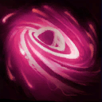

Probius
Welcome to our Probius guide for Heroes of the Storm. Here you will learn everything you need to know in order to play Probius in a competitive environment, whether you play on your own or with a team.
Disruption Pulse Build
| Level 1 | Level 4 | Level 7 | Level 10 | Level 13 | Level 16 | Level 20 |
|---|---|---|---|---|---|---|
The Disruption Pulse Build places heavy emphasis on dealing large amounts of damage by striking multiple targets with Disruption Pulse Icon Disruption Pulse. Echo Pulse Icon Echo Pulse allows Probius to strike the same target or targets twice with a single pulse cast, all the while having its damage amplified by the effects of Particle Accelerator Icon Particle Accelerator. The rebounded pulse can even trigger the explosion of a Warp Rift Icon Warp Rift that was cast after the initial Disruption Pulse cast or created by Probius Loop Icon Probius Loop at Level 20.
Photon Cannon Build
| Level 1 | Level 4 | Level 7 | Level 10 | Level 13 | Level 16 | Level 20 |
|---|---|---|---|---|---|---|
|  |
The Photon Cannon Build is a more passive playstyle that relies heavily on placing and protecting Photon Cannon Icon Photon Cannons throughout skirmishes. Completion of Gather Minerals Icon Gather Minerals is Probius' highest priority as it will significantly increase the damage output and utility of his Photon Cannons. Null Gate Icon Null Gate can help peel away enemies and prevent them from escaping the range of Probius' cannons. Although the emphasis of this build is Photon Cannon, Probius should still always be casting both Warp Rift Icon Warp Rift and Disruption Pulse Icon Disruption Pulse, as Power Fields will ensure Mana reserves remain topped off.
Warp Rift Build
| Level 1 | Level 4 | Level 7 | Level 10 | Level 13 | Level 16 | Level 20 |
|---|---|---|---|---|---|---|
The Warp Rift Build is capable of dealing massive amounts of AoE damage through use of the Warp Rift Icon Warp Rift/Disruption Pulse Icon Disruption Pulse combo. Probius should try to complete the quest portion of Warp Resonance Icon Warp Resonance as early as possible, as it will provide him a sizable power spike. Rift Shock Icon Rift Shock and Power Overflowing Icon Power Overflowing significantly increase Probius' damage output for a quite lengthy duration which will be constantly refreshed with each successful Warp Rift explosion. Probius should always try to catch multiple targets within an explosion, however he should rarely hold off a guaranteed strike on one target for the mere chance to strike two.
Go Back